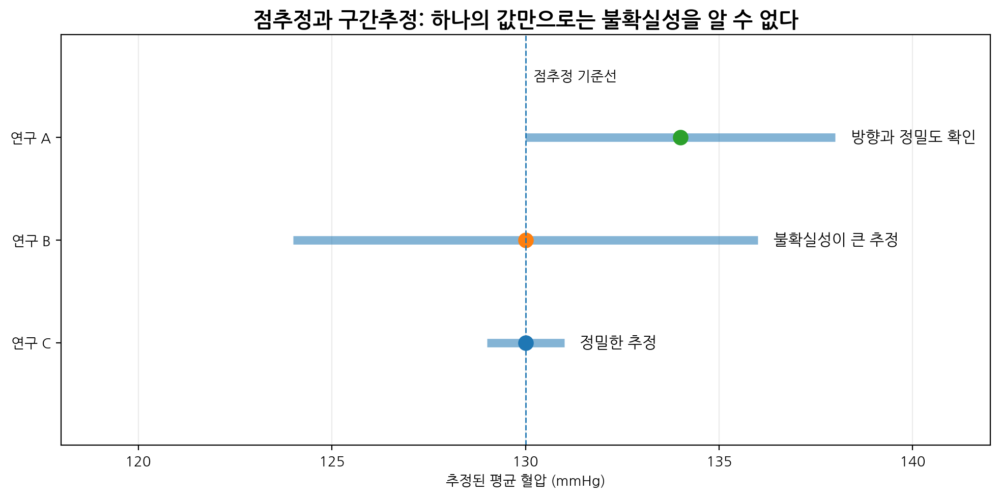
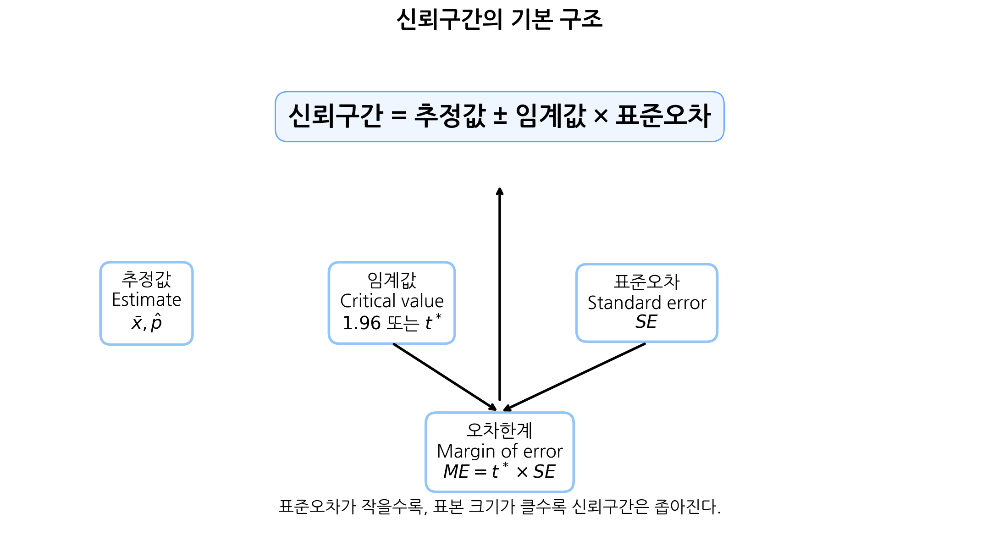
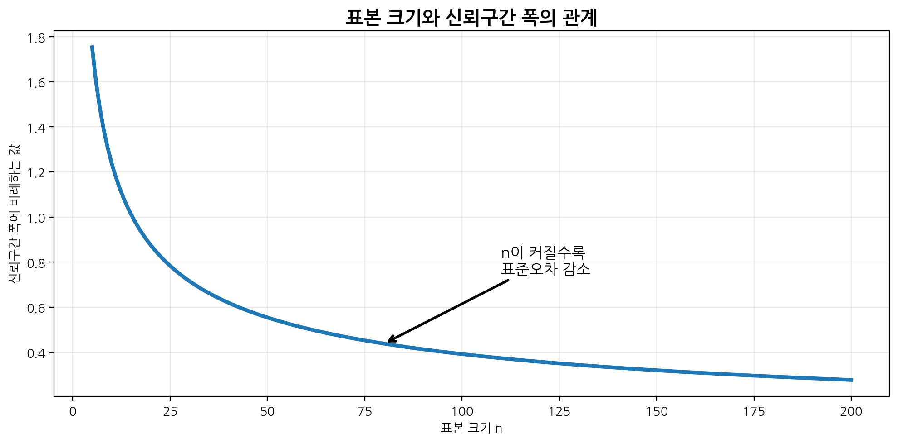
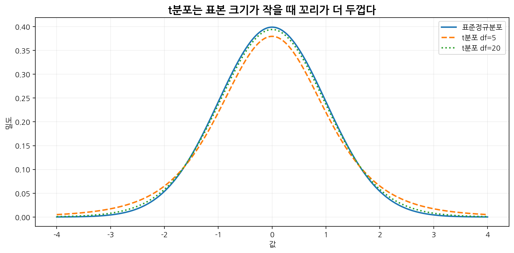
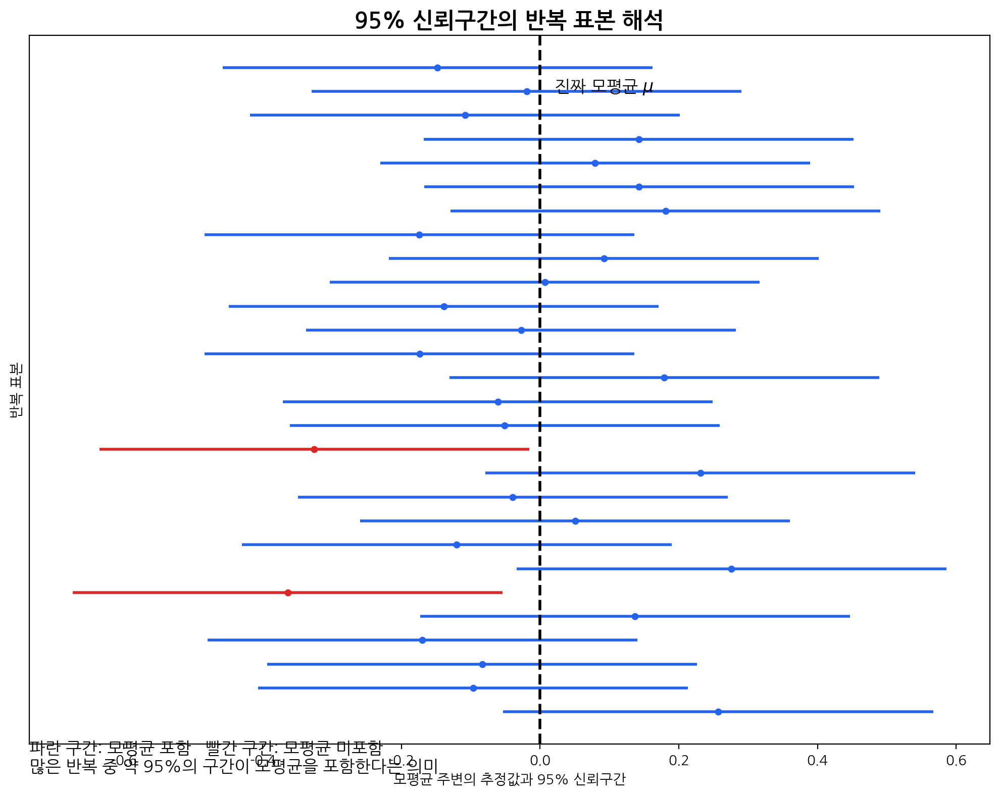
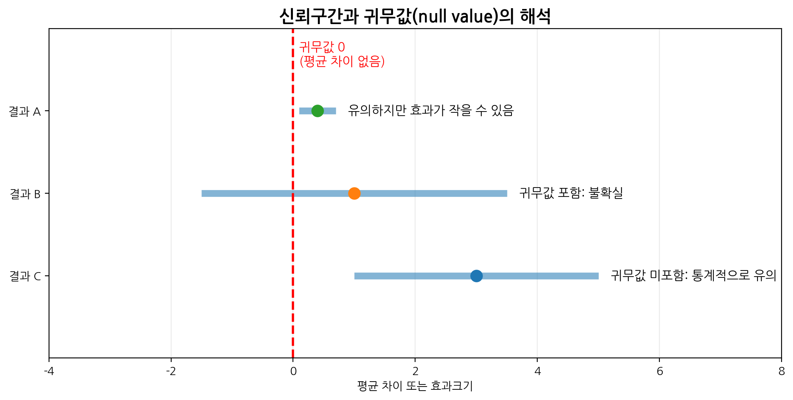
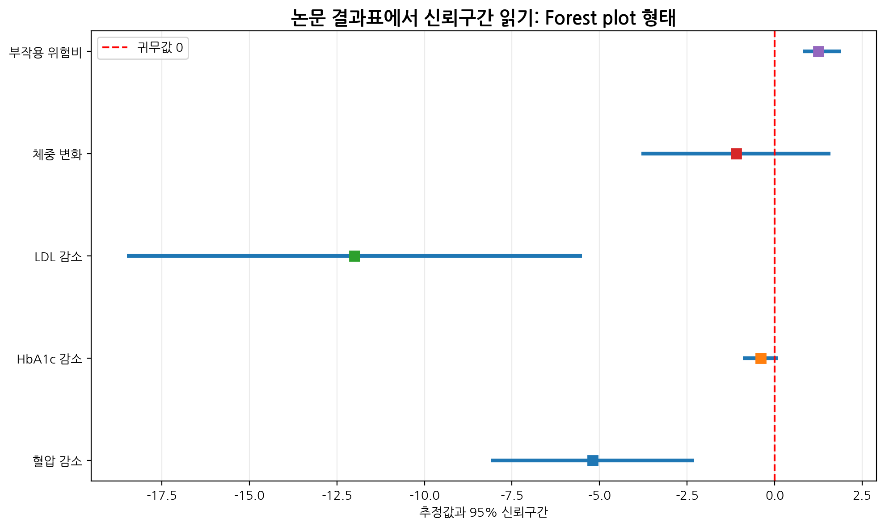
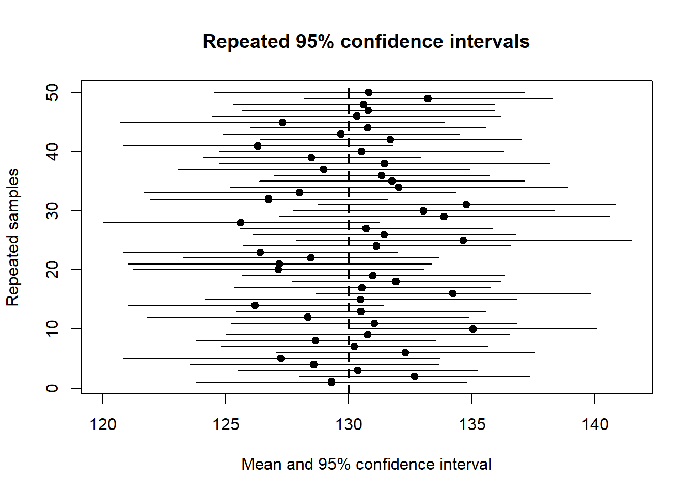

n <- 36
xbar <- 130
s <- 15
se <- s / sqrt(n)
df <- n - 1
t_crit <- qt(0.975, df = df)
lower <- xbar - t_crit * se
upper <- xbar + t_crit * se
se[1] 2.5t_crit[1] 2.030108c(lower, upper)[1] 124.9247 135.0753의학 연구에서는 단순히 “평균 혈압 감소가 5 mmHg였다”, “치료 반응률이 40%였다”, “위험비가 0.75였다”라고만 보고하면 충분하지 않다. 이러한 점추정값은 표본에 따라 달라질 수 있기 때문이다. 따라서 연구 결과를 해석할 때는 다음 질문을 함께 던져야 한다.
신뢰구간은 이러한 질문에 답하기 위한 도구이다.

이번 장에서는 다음 예제를 반복적으로 사용한다.
| 예제 | 상황 | 핵심 개념 |
|---|---|---|
| 평균 혈압 | 36명의 평균 수축기 혈압 추정 | 평균의 신뢰구간 |
| 치료 반응률 | 200명 중 80명이 반응 | 비율의 신뢰구간 |
| 치료 효과 | 치료군과 대조군의 평균 차이 | 효과크기와 귀무값 |
| 진단검사 | 민감도와 특이도 추정 | 비율의 불확실성 |
| 논문 결과표 | 추정값과 95% CI 해석 | 통계적·임상적 의미 |
점추정(point estimation)은 모집단의 모수(parameter)를 하나의 숫자로 추정하는 것이다.
예를 들어 모집단 평균을 \(\mu\)라고 할 때, 표본평균 \(\bar{x}\)는 \(\mu\)의 점추정값이다.
\[\hat{\mu} = \bar{x}\]
치료 반응률처럼 모집단 비율을 \(p\)라고 할 때, 표본비율 \(\hat{p}\)는 \(p\)의 점추정값이다.
\[\hat{p} = \frac{x}{n}\]
여기서
이다.
점추정은 간단하고 직관적이다. 그러나 점추정에는 중요한 한계가 있다. 표본을 다시 뽑으면 점추정값이 달라질 수 있다.
예를 들어 어떤 병원에서 환자 36명의 평균 수축기 혈압이 130 mmHg였다고 하자. 이 값은 모집단 평균 혈압의 점추정값이다. 하지만 다른 36명을 뽑았다면 평균이 128일 수도 있고, 133일 수도 있다.
따라서 점추정값만으로는 추정의 불확실성을 알 수 없다.
구간추정(interval estimation)은 모수가 있을 것으로 예상되는 범위를 제시하는 것이다.
예를 들어 평균 혈압의 점추정값이 130 mmHg이고 95% 신뢰구간이 126.1에서 133.9 mmHg라고 하자.
\[130.0 \; (95\% \; CI: 126.1,\; 133.9)\]
이 표현은 다음을 함께 알려준다.
구간추정은 단순한 숫자 하나보다 훨씬 풍부한 정보를 제공한다.
| 구분 | 점추정 | 구간추정 |
|---|---|---|
| 형태 | 하나의 숫자 | 범위 |
| 예 | 평균 혈압 130 mmHg | 95% CI: 126.1–133.9 |
| 장점 | 간단하고 직관적 | 불확실성 표현 가능 |
| 한계 | 정밀도 알 수 없음 | 계산과 해석이 조금 더 복잡 |
| 논문 보고 | 단독 제시는 부족 | 추정값과 함께 제시 권장 |
의학 논문에서는 점추정값과 신뢰구간을 함께 제시하는 것이 좋다. 점추정값은 효과의 크기와 방향을 보여주고, 신뢰구간은 그 추정이 얼마나 정밀한지를 보여준다.
대부분의 신뢰구간은 다음과 같은 형태를 가진다.
\[\text{Estimate} \pm \text{Margin of Error}\]
오차한계(margin of error)는 다시 다음과 같이 표현된다.
\[\text{Margin of Error} = \text{Critical Value} \times \text{Standard Error}\]
따라서 신뢰구간의 일반적인 구조는 다음과 같다.
\[\text{Estimate} \pm \text{Critical Value} \times SE\]

여기서 각 요소의 의미는 다음과 같다.
| 구성요소 | 의미 | 예 |
|---|---|---|
| Estimate | 표본에서 계산한 추정값 | \(\bar{x}\), \(\hat{p}\) |
| Critical value | 원하는 신뢰수준에 해당하는 기준값 | 1.96, \(t^*\) |
| Standard error | 추정값의 표본 간 변동성 | \(s/\sqrt{n}\) |
| Margin of error | 추정값에서 양쪽으로 더하고 빼는 폭 | \(1.96 \times SE\) |
즉 신뢰구간은 단순히 “평균 ± 표준편차”가 아니다. 신뢰구간은 추정값 ± 임계값 × 표준오차이다.
신뢰구간을 이해하려면 표준편차와 표준오차를 반드시 구분해야 한다.
| 개념 | 기호 | 의미 | 무엇의 변동성인가? |
|---|---|---|---|
| 표준편차 | \(s\) 또는 \(\sigma\) | 개별 관찰값의 퍼짐 | 개인 간 차이 |
| 표준오차 | \(SE\) | 추정값의 표본 간 변동성 | 표본평균의 불확실성 |
예를 들어 혈압 자료에서 표준편차가 15 mmHg라는 것은 개인들의 혈압이 평균 주변에서 어느 정도 퍼져 있는지를 의미한다.
반면 표준오차가 2.5 mmHg라는 것은 표본평균이 반복 표본추출에서 어느 정도 변동할지를 의미한다.
평균의 표준오차는 다음과 같다.
\[SE(\bar{X}) = \frac{\sigma}{\sqrt{n}}\]
실제 분석에서는 모집단 표준편차 \(\sigma\)를 모르기 때문에 표본 표준편차 \(s\)를 사용한다.
\[SE(\bar{X}) \approx \frac{s}{\sqrt{n}}\]
표본 크기 \(n\)이 커지면 표준오차는 작아진다.
\[SE(\bar{X}) = \frac{\sigma}{\sqrt{n}}\]
이 식에서 \(n\)이 분모에 있기 때문이다. 표본 크기가 4배가 되면 표준오차는 절반이 된다.
예를 들어 \(\sigma=20\)일 때,
| 표본 크기 \(n\) | 표준오차 \(20/\sqrt{n}\) |
|---|---|
| 25 | 4.00 |
| 100 | 2.00 |
| 400 | 1.00 |
표본 크기가 커지면 표본평균이 더 안정적이 되고, 신뢰구간도 더 좁아진다.

이론적으로 모집단 표준편차 \(\sigma\)를 알고 있고, 표본평균의 분포가 정규분포에 가깝다면 평균의 95% 신뢰구간은 다음과 같다.
\[\bar{x} \pm 1.96 \frac{\sigma}{\sqrt{n}}\]
여기서 1.96은 표준정규분포에서 가운데 95%를 포함하는 기준값이다.
\[P(-1.96 \leq Z \leq 1.96) \approx 0.95\]
하지만 실제 의학 연구에서는 모집단 표준편차 \(\sigma\)를 아는 경우가 거의 없다. 대부분 표본 표준편차 \(s\)를 사용해야 한다.
모집단 표준편차를 모르는 경우 평균의 신뢰구간은 다음과 같다.
\[\bar{x} \pm t^* \frac{s}{\sqrt{n}}\]
여기서
이다.
표본 크기가 작을수록 \(t^*\)는 1.96보다 크다. 이는 표본 표준편차 \(s\)로 모집단 표준편차 \(\sigma\)를 추정하는 데 추가적인 불확실성이 있기 때문이다.
36명의 환자에서 수축기 혈압을 측정했더니 표본평균이 130 mmHg, 표본 표준편차가 15 mmHg였다고 하자.
\[\bar{x}=130,\quad s=15,\quad n=36\]
표준오차는 다음과 같다.
\[SE = \frac{s}{\sqrt{n}} = \frac{15}{\sqrt{36}} = \frac{15}{6} = 2.5\]
표본 크기가 36이므로 자유도는 35이다.
\[df=n-1=35\]
95% 신뢰구간에서 \(t^*\)는 약 2.03이다.
따라서 오차한계는 다음과 같다.
\[ME = 2.03 \times 2.5 = 5.075\]
95% 신뢰구간은 다음과 같다.
\[130 \pm 5.075\]
즉,
\[(124.925,\; 135.075)\]
반올림하면 다음과 같다.
\[(124.9,\; 135.1)\]
따라서 결과는 다음과 같이 보고할 수 있다.
36명의 평균 수축기 혈압은 130.0 mmHg였고, 95% 신뢰구간은 124.9에서 135.1 mmHg였다.
표본 크기가 작을 때는 표본 표준편차 \(s\)가 모집단 표준편차 \(\sigma\)를 정확히 추정하지 못할 수 있다. 이 불확실성을 반영하기 위해 정규분포 대신 t분포(t distribution)를 사용한다.
t분포는 정규분포와 비슷하게 0을 중심으로 대칭이지만, 꼬리가 더 두껍다. 꼬리가 두껍다는 것은 평균에서 멀리 떨어진 값이 나올 가능성을 조금 더 크게 본다는 뜻이다.

평균의 신뢰구간에서 t분포의 자유도는 보통 다음과 같다.
\[df=n-1\]
자유도는 독립적으로 변할 수 있는 정보의 수를 의미한다. 표본평균을 계산하면 자료의 합이 평균에 의해 제약되므로, \(n\)개의 값 중 자유롭게 변할 수 있는 값은 \(n-1\)개가 된다.
예를 들어 세 값의 평균이 10으로 고정되어 있다고 하자. 세 값의 합은 30이어야 한다. 앞의 두 값을 자유롭게 정하면 세 번째 값은 자동으로 정해진다. 따라서 자유도는 2이다.
표본 크기가 커지면 t분포는 표준정규분포에 가까워진다.
| 자유도 | 95% 신뢰구간의 \(t^*\) |
|---|---|
| 5 | 약 2.571 |
| 10 | 약 2.228 |
| 20 | 약 2.086 |
| 30 | 약 2.042 |
| 100 | 약 1.984 |
| 무한대 | 1.960 |
표본 크기가 충분히 크면 \(t^*\)와 1.96의 차이가 매우 작아진다. 그러나 표본 크기가 작을 때는 t분포를 사용하는 것이 중요하다.
95% 신뢰구간은 흔히 잘못 해석된다. 정확한 빈도주의적 해석은 다음과 같다.
같은 방법으로 표본을 반복해서 뽑고 매번 95% 신뢰구간을 만들면, 그 구간들 중 약 95%가 진짜 모수를 포함한다.
즉 95%라는 말은 구간을 만드는 절차의 장기적 성질에 대한 설명이다.

이미 한 번 계산된 특정 신뢰구간에 대해 “모수가 이 구간 안에 있을 확률이 95%”라고 말하는 것은 엄밀한 빈도주의 해석은 아니다. 계산이 끝난 뒤 모수는 고정되어 있고, 구간도 고정되어 있기 때문이다.
다만 실무적으로는 다음과 같이 표현하면 자연스럽고 안전하다.
이 자료로부터 추정한 모평균의 95% 신뢰구간은 124.9에서 135.1 mmHg이다.
또는
반복 표본추출의 관점에서 이와 같은 방법으로 만든 신뢰구간은 장기적으로 약 95%의 비율로 모평균을 포함한다.
| 오해 | 왜 틀렸는가? |
|---|---|
| “모수가 이 구간 안에 있을 확률이 95%이다.” | 빈도주의 해석에서는 모수는 고정된 값이다. |
| “자료의 95%가 이 구간 안에 있다.” | 신뢰구간은 개별 자료값의 범위가 아니라 모수의 추정 범위이다. |
| “95% CI가 좁으면 반드시 임상적으로 중요하다.” | 정밀도와 임상적 중요성은 다르다. |
| “95% CI가 0을 포함하지 않으면 효과가 크다.” | 통계적 유의성과 효과 크기는 다르다. |
| “95% CI가 0을 포함하면 아무 효과도 없다.” | 효과가 없다는 증거가 아니라 불확실성이 크다는 뜻일 수 있다. |
비율은 성공/실패, 양성/음성, 발생/비발생처럼 이분형 결과에서 자주 사용된다.
예를 들어 200명 중 80명이 치료에 반응했다면 표본비율은 다음과 같다.
\[\hat{p} = \frac{80}{200} = 0.4\]
즉 관찰된 치료 반응률은 40%이다.
표본비율의 표준오차는 다음과 같다.
\[SE(\hat{p}) = \sqrt{ \frac{\hat{p}(1-\hat{p})}{n} }\]
여기서
이다.
이 식은 이항분포의 분산에서 나온다. 이항분포에서 성공자 수 \(X\)의 분산은 다음과 같다.
\[Var(X)=np(1-p)\]
표본비율은 \(\hat{p}=X/n\)이므로,
\[Var(\hat{p}) = Var\left(\frac{X}{n}\right) = \frac{1}{n^2}Var(X)\]
\[= \frac{1}{n^2}np(1-p) = \frac{p(1-p)}{n}\]
따라서 표본비율의 표준오차는 다음과 같다.
\[SE(\hat{p}) = \sqrt{ \frac{p(1-p)}{n} }\]
실제로는 \(p\)를 모르므로 \(\hat{p}\)를 대신 사용한다.
\[SE(\hat{p}) \approx \sqrt{ \frac{\hat{p}(1-\hat{p})}{n} }\]
200명 중 80명이 치료에 반응했다고 하자.
\[\hat{p}=0.4,\quad n=200\]
표준오차는 다음과 같다.
\[SE(\hat{p}) = \sqrt{ \frac{0.4(1-0.4)}{200} }\]
\[= \sqrt{ \frac{0.24}{200} } = \sqrt{0.0012} \approx 0.0346\]
근사적 95% 신뢰구간은 다음과 같다.
\[\hat{p} \pm 1.96SE\]
\[0.4 \pm 1.96(0.0346)\]
\[0.4 \pm 0.0678\]
따라서
\[(0.3322,\; 0.4678)\]
즉 치료 반응률의 95% 신뢰구간은 약 33.2%에서 46.8%이다.
위에서 사용한 신뢰구간은 정규근사 방법이다. 표본 크기가 충분히 크고, 성공과 실패의 수가 모두 충분할 때 잘 작동한다.
일반적으로 다음 조건을 확인한다.
\[n\hat{p} \geq 5\]
\[n(1-\hat{p}) \geq 5\]
또는 더 보수적으로 10 이상을 요구하기도 한다.
표본 크기가 작거나 비율이 0 또는 1에 가까운 경우에는 정규근사 신뢰구간이 부정확할 수 있다. 이때는 Wilson 신뢰구간, exact binomial 신뢰구간 등을 고려할 수 있다.
신뢰수준(confidence level)은 신뢰구간을 만드는 절차가 장기적으로 모수를 포함하는 비율을 의미한다.
자주 사용하는 신뢰수준은 다음과 같다.
| 신뢰수준 | 표준정규 임계값 |
|---|---|
| 90% | 1.645 |
| 95% | 1.960 |
| 99% | 2.576 |
신뢰수준이 높아지면 임계값이 커진다. 따라서 신뢰구간은 넓어진다.
예를 들어 같은 자료에서 99% 신뢰구간은 95% 신뢰구간보다 넓다. 더 높은 신뢰수준을 얻기 위해 더 넓은 범위를 제시하는 것이다.
신뢰구간 폭은 다음 세 가지에 의해 결정된다.
표본 크기가 커지면 표준오차가 작아진다.
\[SE=\frac{s}{\sqrt{n}}\]
따라서 신뢰구간은 좁아진다.
표준편차 \(s\)가 클수록 표준오차가 커진다.
\[SE=\frac{s}{\sqrt{n}}\]
따라서 신뢰구간은 넓어진다.
신뢰수준이 높을수록 임계값이 커진다. 따라서 신뢰구간은 넓어진다.
| 요인 | 값이 커지면 | 신뢰구간 폭 |
|---|---|---|
| 표본 크기 \(n\) | 표준오차 감소 | 좁아짐 |
| 표준편차 \(s\) | 표준오차 증가 | 넓어짐 |
| 신뢰수준 | 임계값 증가 | 넓어짐 |
귀무값(null value)은 효과가 없음을 나타내는 기준값이다.
| 효과지표 | 귀무값 | 의미 |
|---|---|---|
| 평균 차이 | 0 | 두 집단 평균 차이 없음 |
| 비율 차이 | 0 | 두 집단 비율 차이 없음 |
| 위험비 | 1 | 두 집단 위험 같음 |
| 오즈비 | 1 | 두 집단 오즈 같음 |
| 상관계수 | 0 | 선형 상관 없음 |
신뢰구간이 귀무값을 포함하는지 여부는 통계적 유의성과 연결된다.

치료군과 대조군의 평균 혈압 감소 차이가 다음과 같다고 하자.
\[\text{Mean difference} = -5.0\]
\[95\% \; CI: (-8.0,\; -2.0)\]
이 신뢰구간은 0을 포함하지 않는다. 따라서 5% 유의수준에서 통계적으로 유의한 차이라고 볼 수 있다.
반면 다음과 같다면,
\[\text{Mean difference} = -5.0\]
\[95\% \; CI: (-11.0,\; 1.0)\]
이 구간은 0을 포함한다. 따라서 통계적으로 유의하다고 보기 어렵다. 그러나 이것이 “효과가 전혀 없다”는 뜻은 아니다. 표본 크기가 작거나 변동성이 커서 불확실성이 큰 것일 수 있다.
위험비나 오즈비는 귀무값이 1이다.
예를 들어 어떤 치료의 사망 위험비가 다음과 같다고 하자.
\[RR=0.70,\quad 95\% \; CI: 0.55,\; 0.90\]
이 구간은 1을 포함하지 않는다. 따라서 치료군의 위험이 유의하게 낮다고 해석할 수 있다.
반면,
\[RR=0.70,\quad 95\% \; CI: 0.40,\; 1.20\]
이면 구간이 1을 포함하므로 통계적으로 유의하다고 보기 어렵다.
p-value와 신뢰구간은 서로 다른 정보를 제공하지만 깊이 연결되어 있다.
일반적으로 양측검정에서 다음 관계가 성립한다.
| 95% 신뢰구간 | p-value와의 관계 |
|---|---|
| 귀무값을 포함하지 않음 | 대체로 \(p<0.05\) |
| 귀무값을 포함함 | 대체로 \(p\geq 0.05\) |
하지만 신뢰구간은 p-value보다 더 많은 정보를 제공한다.
p-value는 주로 “귀무가설하에서 이런 결과가 얼마나 드문가?”를 알려준다. 반면 신뢰구간은 다음을 함께 알려준다.
따라서 의학 논문을 읽을 때는 p-value만 보지 말고 신뢰구간을 함께 확인해야 한다.
통계적으로 유의하다는 것이 항상 임상적으로 중요하다는 뜻은 아니다.
예를 들어 매우 큰 표본에서 평균 혈압 차이가 0.5 mmHg이고 95% 신뢰구간이 0.2에서 0.8이라고 하자. 이 결과는 통계적으로 유의할 수 있다. 그러나 0.5 mmHg 차이가 임상적으로 의미 있는지는 별도로 판단해야 한다.
반대로 신뢰구간이 넓고 귀무값을 포함하더라도 임상적으로 중요한 효과를 배제하지 못하는 경우가 있다.
예를 들어 사망률 감소 위험비가 다음과 같다고 하자.
\[RR=0.75,\quad 95\% \; CI: 0.50,\; 1.10\]
이 결과는 통계적으로 유의하지 않을 수 있다. 그러나 신뢰구간에는 상당한 위험 감소 가능성도 포함되어 있다. 따라서 “효과가 없다”고 단정하면 안 된다.
의학 연구에서는 다음 두 질문을 모두 보아야 한다.

36명의 환자에서 평균 혈압이 130, 표준편차가 15라고 하자.
n <- 36
xbar <- 130
s <- 15
se <- s / sqrt(n)
df <- n - 1
t_crit <- qt(0.975, df = df)
lower <- xbar - t_crit * se
upper <- xbar + t_crit * se
se[1] 2.5t_crit[1] 2.030108c(lower, upper)[1] 124.9247 135.0753가상의 혈압 자료를 생성하고 평균의 95% 신뢰구간을 계산해 보자.
set.seed(123)
bp <- rnorm(n = 36, mean = 130, sd = 15)
mean(bp)[1] 130.8341sd(bp)[1] 14.08403length(bp)[1] 36t.test(bp)
One Sample t-test
data: bp
t = 55.737, df = 35, p-value < 2.2e-16
alternative hypothesis: true mean is not equal to 0
95 percent confidence interval:
126.0687 135.5994
sample estimates:
mean of x
130.8341 t.test()는 기본적으로 평균의 신뢰구간을 계산해 준다.
result <- t.test(bp)
result$estimatemean of x
130.8341 result$conf.int[1] 126.0687 135.5994
attr(,"conf.level")
[1] 0.9595% 신뢰구간과 99% 신뢰구간을 비교해 보자.
t.test(bp, conf.level = 0.95)
One Sample t-test
data: bp
t = 55.737, df = 35, p-value < 2.2e-16
alternative hypothesis: true mean is not equal to 0
95 percent confidence interval:
126.0687 135.5994
sample estimates:
mean of x
130.8341 t.test(bp, conf.level = 0.99)
One Sample t-test
data: bp
t = 55.737, df = 35, p-value < 2.2e-16
alternative hypothesis: true mean is not equal to 0
99 percent confidence interval:
124.4404 137.2278
sample estimates:
mean of x
130.8341 99% 신뢰구간은 95% 신뢰구간보다 넓다. 더 높은 신뢰수준을 요구하기 때문이다.
200명 중 80명이 치료에 반응했다고 하자.
x <- 80
n <- 200
phat <- x / n
se <- sqrt(phat * (1 - phat) / n)
lower <- phat - 1.96 * se
upper <- phat + 1.96 * se
phat[1] 0.4se[1] 0.03464102c(lower, upper)[1] 0.3321036 0.4678964R에서는 prop.test()를 이용하여 비율의 신뢰구간을 계산할 수 있다.
prop.test(x = 80, n = 200)
1-sample proportions test with continuity correction
data: 80 out of 200, null probability 0.5
X-squared = 7.605, df = 1, p-value = 0.005821
alternative hypothesis: true p is not equal to 0.5
95 percent confidence interval:
0.3322225 0.4716840
sample estimates:
p
0.4 연속성 보정을 끄고 계산할 수도 있다.
prop.test(x = 80, n = 200, correct = FALSE)
1-sample proportions test without continuity correction
data: 80 out of 200, null probability 0.5
X-squared = 8, df = 1, p-value = 0.004678
alternative hypothesis: true p is not equal to 0.5
95 percent confidence interval:
0.3346058 0.4691633
sample estimates:
p
0.4 정확 이항검정 기반 신뢰구간은 binom.test()를 사용한다.
binom.test(x = 80, n = 200)
Exact binomial test
data: 80 and 200
number of successes = 80, number of trials = 200, p-value = 0.005685
alternative hypothesis: true probability of success is not equal to 0.5
95 percent confidence interval:
0.3315463 0.4714643
sample estimates:
probability of success
0.4 표본 크기가 신뢰구간에 미치는 영향을 시뮬레이션해 보자.
set.seed(123)
make_ci <- function(n) {
x <- rnorm(n, mean = 130, sd = 15)
result <- t.test(x)
c(
n = n,
mean = mean(x),
lower = result$conf.int[1],
upper = result$conf.int[2],
width = diff(result$conf.int)
)
}
ci_results <- rbind(
make_ci(20),
make_ci(50),
make_ci(100),
make_ci(300)
)
ci_results n mean lower upper width
[1,] 20 132.1244 125.2960 138.9527 13.656641
[2,] 50 130.7006 126.9114 134.4898 7.578372
[3,] 100 129.3034 126.3624 132.2444 5.882024
[4,] 300 130.4887 128.7976 132.1799 3.38226595% 신뢰구간의 의미를 시뮬레이션으로 확인해 보자. 진짜 모평균은 130이라고 하자.
set.seed(123)
mu <- 130
sigma <- 15
n <- 30
B <- 1000
cover <- logical(B)
for (b in 1:B) {
x <- rnorm(n, mean = mu, sd = sigma)
ci <- t.test(x)$conf.int
cover[b] <- ci[1] <= mu & mu <= ci[2]
}
mean(cover)[1] 0.956결과는 대략 0.95에 가까울 것이다. 즉 같은 방식으로 95% 신뢰구간을 반복해서 만들면 약 95%가 진짜 모평균을 포함한다.
반복 표본에서 만든 신뢰구간 일부를 그림으로 확인해 보자.
set.seed(123)
mu <- 130
sigma <- 15
n <- 30
B <- 50
means <- numeric(B)
lower <- numeric(B)
upper <- numeric(B)
cover <- logical(B)
for (b in 1:B) {
x <- rnorm(n, mean = mu, sd = sigma)
ci <- t.test(x)$conf.int
means[b] <- mean(x)
lower[b] <- ci[1]
upper[b] <- ci[2]
cover[b] <- lower[b] <= mu & mu <= upper[b]
}
plot(
x = means,
y = 1:B,
xlim = range(c(lower, upper)),
pch = 19,
xlab = "Mean and 95% confidence interval",
ylab = "Repeated samples",
main = "Repeated 95% confidence intervals"
)
segments(lower, 1:B, upper, 1:B)
abline(v = mu, lwd = 2, lty = 2)